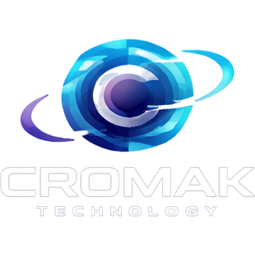

O Motor Por Trás da Máquina
Nossa História: O Nascimento da Cromak Technology

💡 A Gênese: Engenharia Direta ao Ponto
A Cromak Technology foi fundada com um objetivo técnico bem definido: suprir a carência do mercado por softwares de alta performance que fossem verdadeiramente focados na resolução de problemas, sem a sobrecarga de recursos desnecessários.
Observamos que profissionais e usuários avançados lidavam constantemente com ferramentas fragmentadas, infladas por telemetria corporativa ou limitadas por arquiteturas ineficientes. A resposta a essa lacuna operacional foi o desenvolvimento da nossa primeira solução nativa, a DeepClean Suite. Nosso propósito tornou-se claro: substituir utilitários genéricos por ecossistemas de software robustos, objetivos e desenvolvidos sob os mais rigorosos padrões de eficiência.
O Arquiteto
Fundada em 2026 por Marcos Souza como a divisão de engenharia de software do ecossistema MS Digital, a Cromak une arquitetura de software robusta com visão de produto e foco absoluto na experiência do usuário para resolver problemas reais.
🚀 O Futuro se Constrói Juntos
A nossa visão de futuro não é sobre números abstratos, é sobre evolução contínua. Sabemos que, para entregar o melhor, precisamos ouvir quem mais importa: você.
Queremos que nossos usuários façam parte do nosso laboratório de inovação. Nosso compromisso está na excelência do atendimento, na escuta ativa dos seus feedbacks e na consistência das nossas atualizações e compilações.
🛠 O DNA Cromak: Alta Performance e Design Premium
Nós não criamos apenas linhas de código; nós estruturamos soluções inteligentes. Acreditamos que a tecnologia moderna nos permite focar no que realmente importa: uma arquitetura robusta, utilidade real e uma interface Premium.
Para nós, um software precisa ser fácil de usar, elegante e incrivelmente rápido. Unimos o que há de mais avançado em engenharia de software contemporânea a um design limpo e intuitivo. Na Cromak, o foco é a experiência do usuário. Nossas ferramentas nascem prontas para o trabalho pesado, sem travar o seu computador e sem fazer você perder tempo.
O Laboratório
Baseados no estado de São Paulo, Brasil, desenvolvemos tecnologia nativa para operações globais.
- ✓ Código 100% Nativo
- ✓ Operações Zero-Cloud
- ✓ Suporte Internacional (11 Idiomas)
🔒 Compromisso Absoluto com a Privacidade
No mercado de segurança da informação, confiança é inegociável. Nós desenvolvemos softwares para proteger seus dados, não para coletá-los.
A Cromak Technology opera sob a política estrita de Zero Telemetria. Nossos motores forenses, cofres de senha e compiladores funcionam de forma 100% offline. Não enviamos relatórios de uso para a nuvem, não monitoramos seus cliques e não exigimos conexão com a internet para validações invasivas. A sua máquina, as suas regras.
Fale Conosco
Se você busca ferramentas com utilidade real, praticidade e a velocidade que a sua rotina exige, você está no lugar certo.
Seja bem-vindo à Cromak Technology. Alta performance de verdade.
Acessar SuporteAcessos Globais
Contador de visitas auditadas em tempo real ao ecossistema Cromak: